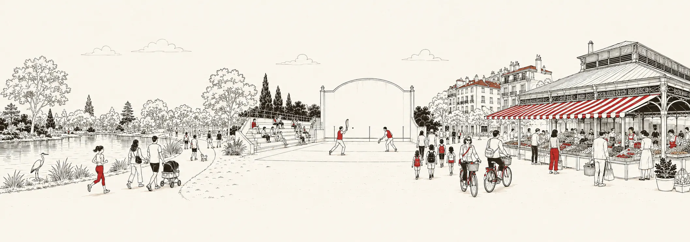

Living in Biarritz: what the figures say
Before the question of price comes another one: do I want to live here? This page answers it in figures, all public, sourced and dated.


Who lives in Biarritz
Biarritz has 25,810 inhabitants. The age structure is the first figure to know: 44.6% of Biarrots are 60 or older (11,520 people), and 9.4% are under 15 (2,437 children). It is the profile of the great seaside resorts, where people settle for good: across France, the 60-and-over represent 27.0% of the population, and the under-15s 17.3%.
| Indicator | Value | Share | France |
|---|---|---|---|
| Population | 25,810 | ||
| Under 15 | 2,437 | 9.4% | 17.3% |
| 60 and over | 11,520 | 44.6% | 27.0% |
Source: INSEE, 2022 population census, infra-communal (IRIS) bases. France shares computed from the same base (France excluding Mayotte).
Main homes, second homes, vacancies
It is the city's signature figure: Biarritz has more homes than inhabitants (26,387 homes for 25,810 inhabitants). Second and occasional homes account for 40.7% of the stock, i.e. 10,750 homes. It is first of all a measure of attractiveness, and it explains much of the price pressure: across France, second homes represent 9.7% of the stock, more than four times less. Conversely, vacant homes are rare: 2.1% of the stock, against 8.0% in France, the sign of a city where a home always finds a taker.
| Housing | Number | Share | France |
|---|---|---|---|
| Whole stock | 26,387 | ||
| Main homes | 15,078 | 57.1% | 82.3% |
| Second and occasional homes | 10,750 | 40.7% | 9.7% |
| Vacant homes | 560 | 2.1% | 8.0% |
| Apartments | 20,643 | 78.2% | 44.1% |
| Houses | 5,647 | 21.4% | 54.8% |
The city-wide average hides a very sharp gradient: a fourfold gap between City Centre · Les Halles (61.5%) and Lac Marion (16.8%). And within the Centre itself, the seafront area rises to 72.2% second homes. Neighbourhood by neighbourhood:
| Neighbourhood | Inhabitants | Homes | Second homes |
|---|---|---|---|
| City Centre · Les HallesIRIS Front de Mer + Halles-Hurlague | 3,746 | 6,573 | 61.5% |
| Bibi-BeaurivageIRIS République-Beau Rivage | 1,520 | 2,063 | 51.2% |
| Imperial QuarterIRIS Mairie-Marne + Saint-Charles-Golf | 4,177 | 5,697 | 50.1% |
| Milady QuarterIRIS Labordotte-La Colline + Pétricot-Reptou | 3,745 | 3,015 | 26.6% |
| Parc d'Hiver · BraouIRIS Les Rocailles-Lahouze + La Rochefoucauld-Aguilera + Parme-La Négresse | 7,571 | 5,822 | 25.0% |
| Lac MarionIRIS Saint-Martin-Cité des Fleurs + Parc d'Hiver-Marion-Mouriscot | 5,051 | 3,217 | 16.8% |
Source: INSEE, 2022 census, housing and population bases at IRIS level (geography as of 1 January 2024). France shares computed from the same base (France excluding Mayotte).
Schools and education
The city has 9 primary schools, 3 middle schools and 3 high schools (one of them vocational), for 2,437 children under 15.
Source: INSEE, Base permanente des équipements 2025 (geography as of 1 January 2025).
Shops, healthcare, services, sport
INSEE counts 2,528 facilities in Biarritz in 2025, roughly one for every ten inhabitants. And one figure says how much the city attracts: 218 estate agencies, one per 118 inhabitants, more than the bakeries (42), pharmacies (19) and general practitioners (53) combined. And density beats the national reference on every line of the table: France has one estate agency per 610 inhabitants, and one fronton per nearly 25,000.
| Facility | Number | Ratio | France |
|---|---|---|---|
| Estate agencies | 218 | 1 per 118 inhabitants | 1 per 610 |
| Restaurants | 264 | 1 per 97 inhabitants | 1 per 292 |
| Clothing shops | 130 | 1 per 198 inhabitants | 1 per 1,350 |
| Hairdressers | 71 | 1 per 363 inhabitants | 1 per 713 |
| General practitioners | 53 | 1 per 486 inhabitants | 1 per 1,106 |
| Hotels | 51 | 1 per 506 inhabitants | 1 per 3,925 |
| Bakeries | 42 | 1 per 614 inhabitants | 1 per 1,354 |
| Pelota walls and frontons | 21 | 1 per 1,229 inhabitants | 1 per 24,884 |
| Pharmacies | 19 | 1 per 1,358 inhabitants | 1 per 3,336 |
And neighbourhood by neighbourhood, each has its speciality: restaurants in the Centre and on the seafront, schools at Lac Marion and in the neighbourhoods where people live year-round.
| Neighbourhood | Primary sch. | Bakeries | Pharm. | Doctors | Restaurants | Estate ag. |
|---|---|---|---|---|---|---|
| City Centre · Les HallesIRIS Front de Mer + Halles-Hurlague | 0 | 22 | 6 | 14 | 138 | 55 |
| Bibi-BeaurivageIRIS République-Beau Rivage | 2 | 0 | 1 | 0 | 12 | 9 |
| Imperial QuarterIRIS Mairie-Marne + Saint-Charles-Golf | 1 | 6 | 4 | 6 | 39 | 38 |
| Milady QuarterIRIS Labordotte-La Colline + Pétricot-Reptou | 1 | 2 | 1 | 4 | 13 | 19 |
| Parc d'Hiver · BraouIRIS Les Rocailles-Lahouze + La Rochefoucauld-Aguilera + Parme-La Négresse | 2 | 8 | 5 | 23 | 45 | 47 |
| Lac MarionIRIS Saint-Martin-Cité des Fleurs + Parc d'Hiver-Marion-Mouriscot | 3 | 4 | 2 | 6 | 15 | 31 |
19 estate agencies and 2 restaurants are not attached to an IRIS in the detail file; adding them, every column matches the city-wide total.
Source: INSEE, Base permanente des équipements 2025, geolocated detail file. Ratios computed on the 2022 municipal population; France ratios computed on the same BPE and the France population of the same 2022 base (excluding Mayotte).
Natural risks and coastline retreat
Géorisques, the public risk portal, lists four risks for the municipality: ground movement, subsidence and collapse linked to former underground quarries, earthquake (zone 3 of 5, moderate seismicity) and transport of hazardous goods. The municipality's radon potential is category 2 of 3.
The most important point for a seafront buyer: Biarritz is on the official list of municipalities exposed to coastline retreat, since the initial decree of 29 April 2022. The list, last replaced by the decree of 13 February 2026, counts 371 municipalities, six of them on the Basque coast: Anglet, Biarritz, Bidart, Ciboure, Guéthary and Saint-Jean-de-Luz. In practice, the municipality must adapt its planning rules to the retreating shoreline and map its exposure; for anyone buying facing the ocean, it is a fact worth knowing, as everywhere along the Basque coast.
Sources: Géorisques API (consulted August 2026); decree no. 2022-750 of 29 April 2022, amended by decree no. 2026-95 of 13 February 2026 (Légifrance).
What it costs
On 2024–2025 notarised sales, the average price in Biarritz is €7,553/m² for an apartment and €9,816/m² for a house. Depending on the neighbourhood, the apartment average runs from €5,407/m² at Lac Marion to €8,321/m² in City Centre · Les Halles. The detail, neighbourhood by neighbourhood:
And a specific property? The estimator calculates its value from real sales around its address. Free, instant, no sign-up.
Estimate a propertySource: DVF (DGFiP / Cerema, Open Licence 2.0), 6,304 sales 2019–2025, extracted July 2026, calculations by Biarritz.immo.